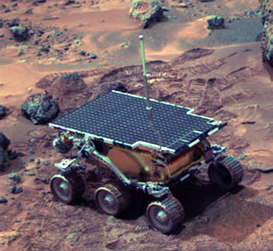
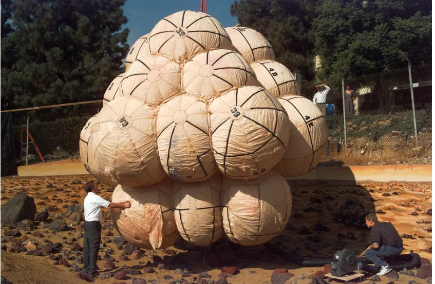
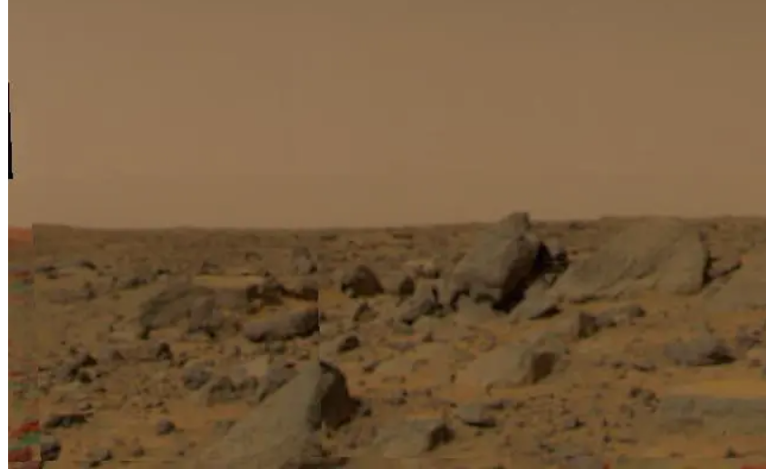

Sojourner
Named after Sojourner Truth, who fought for civil rights and equality.
The first rover

In 1997, a tiny robot rolled onto Mars. It was the first wheeled rover to explore another planet.
Scroll to explore ↓
Time since the mission ended: …
Each dot shows one part of Sojourner and what it did.

Mars is hard and rocky. So a parachute slowed the spacecraft and giant airbags cushioned the crash. It was the first mission to land this way.
Bounces: 0
Named after Sojourner Truth, who fought for civil rights and equality.
The lander honours astronomer Carl Sagan for his contributions to science.
Scientists built a safe ramp so the rover could roll from the lander onto Mars. The lander and rover worked as a team.

Ares Vallis is an ancient floodplain. Huge amounts of water once flowed across it.
Scientists studied the surface and picked it as a fairly safe landing spot. Rocks left by the flood help us read Mars’s history.
Worked out what rocks and soil are made of.
Photographed the land for geology and checked how the technology was performing.
Measured Mars’s air during descent and the weather at the lander.
Sojourner was built to work for about a week. It kept going for nearly three months.